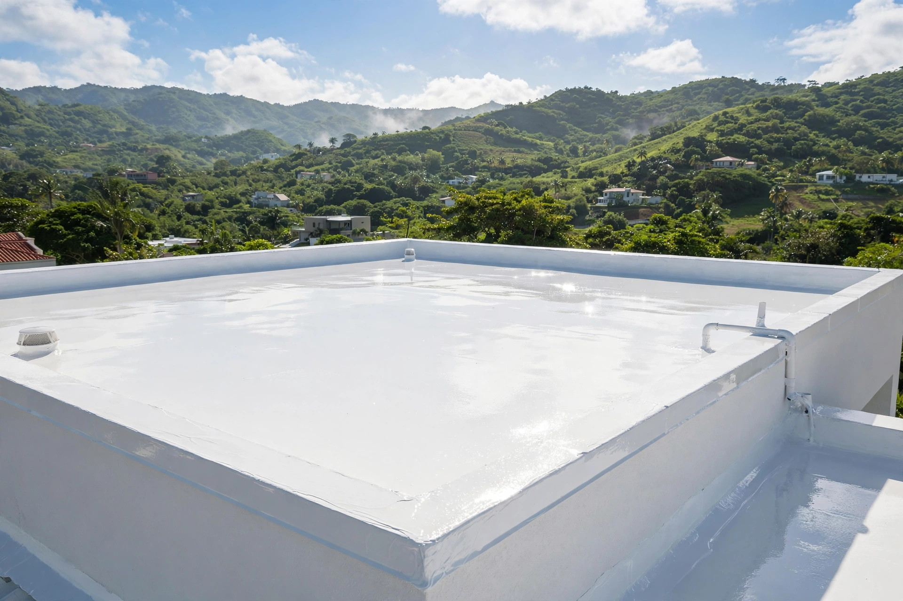

Sellado profesional de techos en Gurabo y el área centro-oriental. Impermeabilización con estándar de calidad top.
Sellado, reparación y mantenimiento de techos: así queda cuando se hace bien.

Sellado profesional de techos en Gurabo y el área centro-oriental: impermeabilización, reparación de filtraciones e inspección de techos.
Sistemas de sellado con acabado profesional.
Membrana y sistemas impermeables de calidad.
Localizamos el origen y lo sellamos de raíz.
Revisiones antes de la temporada de lluvia.
Evaluamos el estado de tu techo antes de sellar.
Escríbenos por WhatsApp y cotizamos.
Trabajo serio, trato directo y resultados que se ven.
Cada techo se sella como si fuera el nuestro.
Conocemos los techos de la zona.
Evaluamos antes de cotizar: nada a ciegas.
Cotización por WhatsApp al 787-469-0959.
Lo que todo dueño de casa pregunta antes de sellar su techo.
Cada 4 a 5 años, según el sistema aplicado y la exposición al sol y la lluvia.
Sí. Evaluamos el estado del techo para recomendar el sistema correcto.
Sí, si está bien adherido. Si está levantado o cuarteado, se remueve primero para que el nuevo sistema pegue bien.
Sí, servimos Gurabo y el área centro-oriental. Escríbenos y confirmamos tu pueblo.
Por WhatsApp al 787-469-0959: envíanos fotos del techo y te respondemos con un estimado gratis.
Llena el formulario y te abrimos WhatsApp con tu mensaje listo. Respondemos rápido.
Esta página es una muestra de lo que hacemos. Llevamos tu negocio a internet con oferta de lanzamiento por tiempo limitado.